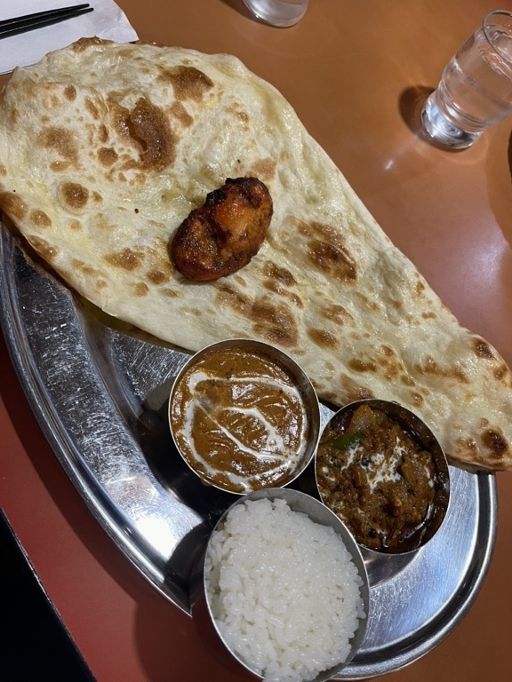
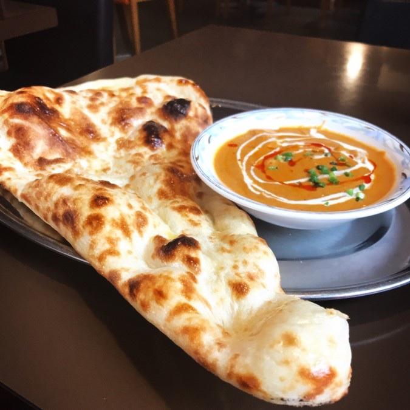
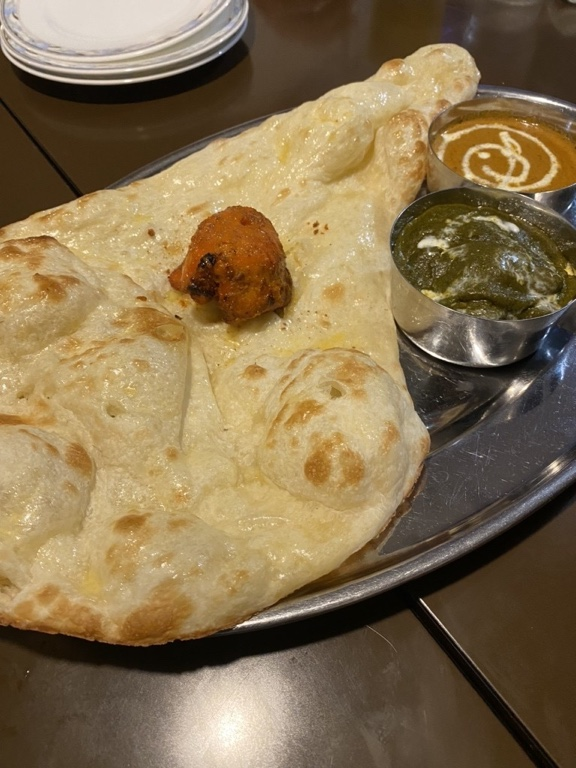
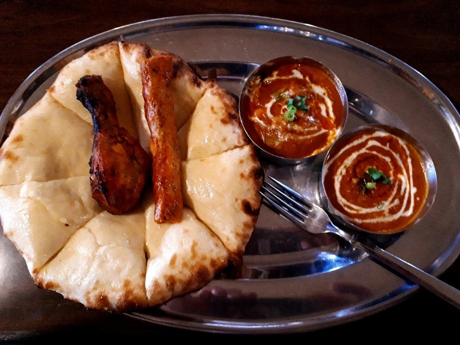
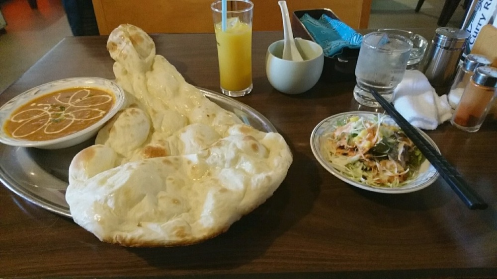
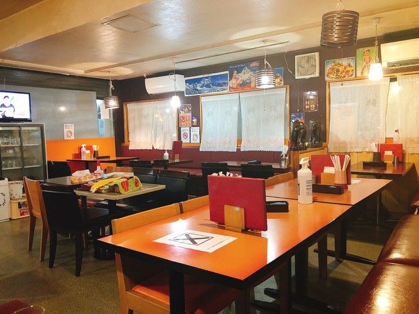
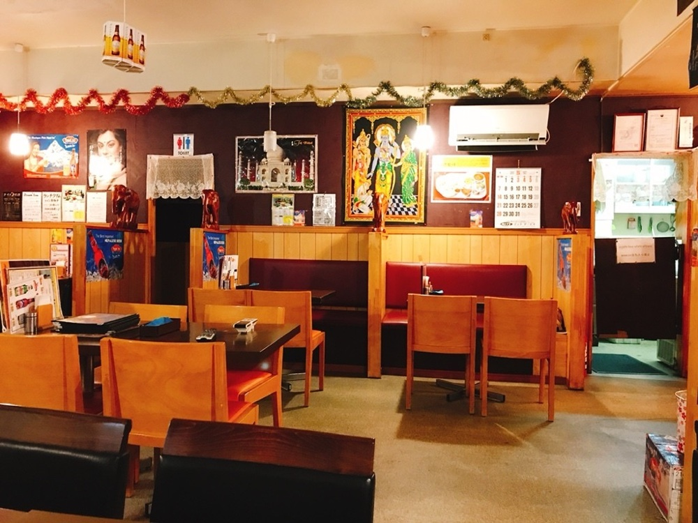
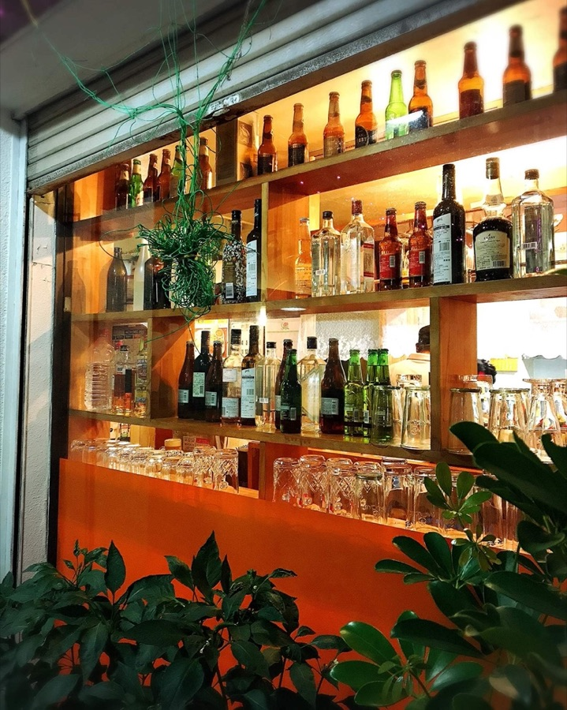
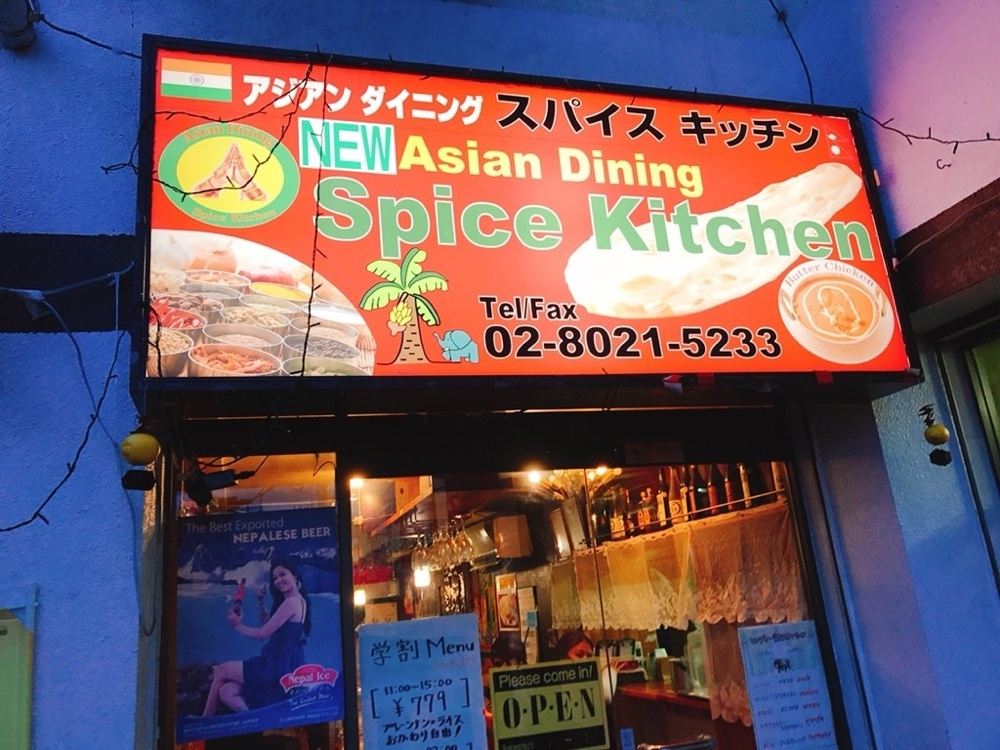
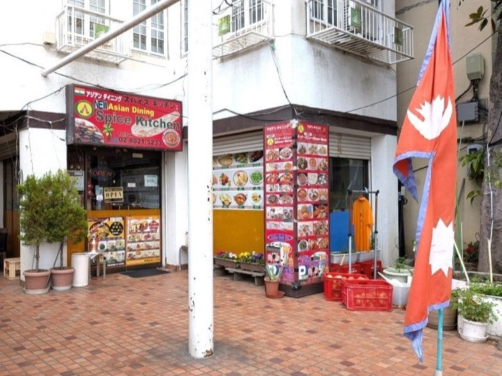

今日は、どのカレーにいたしましょう。
古河駅の西口から歩いて五分。お一人のお昼も、ご家族の夜ごはんも、どうぞお気軽にお越しください。
迷われたら、Aのバターチキンからどうぞ。
この板には、書いてまいりませんでした。ナンもライスも、おかわりをお申しつけください。
ドリンクのお替りは +150円 頂戴しております。
タンドールの窯で焼き上げて、熱いうちにお持ちいたします。もっちりとした生地を、そのままお召し上がりください。プレーンのほか、チーズナンなどもご用意しております。




これまでにいただいたお声を、そのまま載せております。
「特にナンはめちゃモチモチしていてナンだけで何枚でも食べれそうなくらい美味しい」
お客様の声より
「古河では珍しい本格的なインドカレーが食べられる。家庭のカレーでは食べられないようなスパイス感」
お客様の声より
「店員さんがおしぼりを手渡ししてくれたり、お水のお替りを入れてくれたりと気遣いが嬉しい」
お客様の声より
「カレーはしっかりと旨味があるルーで、セットに付いてくる大きなナンも香ばしく焼かれてカレーによく合います。タンドールチキンも美味しいです。」
お客様の声より
テーブル席は、全席禁煙です。お子様連れのお客様も歓迎で、お子様メニューもご用意しております。



JR古河駅の西口から歩いて5分、ジョイパティオの1階でお待ちしております。お車の方は、ジョイパティオ共有の駐車場（15台）をご利用ください。


| 住所 | 〒306-0033 茨城県古河市中央町1-2-37 ジョイパティオ1F |
|---|---|
| 電話 | 0280-21-5233 |
| 営業時間 | 昼 11:00〜15:00／夜 17:00〜22:30 |
| 定休日 | 第2火曜日 |
| 席数 | テーブル席のお店です |
| 駐車場 | ジョイパティオ共有 15台 |
お席のことも、テイクアウトも、お電話でお気軽にお申しつけください。